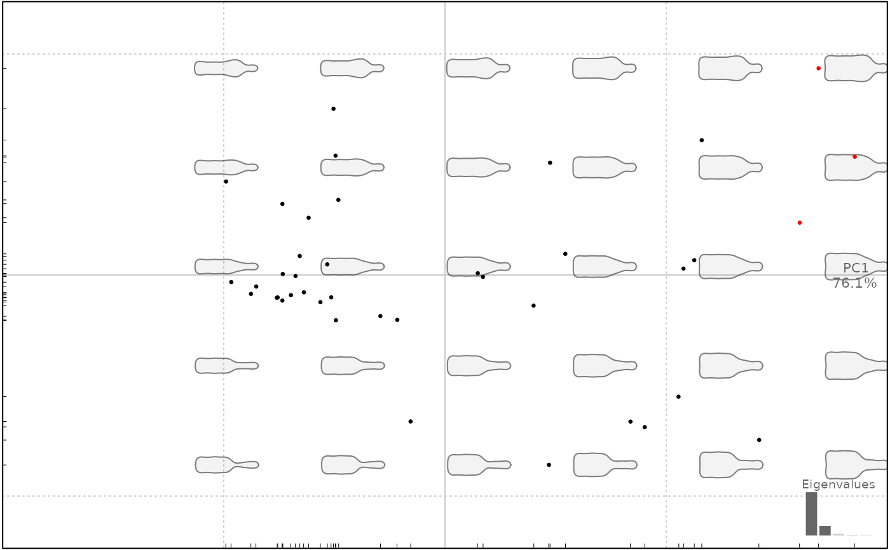

A simple wrapper around dnorm that helps identify outliers. In particular, it may be useful on Coe object (in this case a PCA is first calculated) and also on Ldk for detecting possible outliers on freshly digitized/imported datasets.
Arguments
- x
object, either Coe or a numeric on which to search for outliers
- conf
confidence for dnorm (1e-3 by default)
- nax
number of axes to retain (only for Coe), if <1 retain enough axes to retain this proportion of the variance
- ...
additional parameters to be passed to PCA (only for Coe)
Examples
# on a numeric
x <- rnorm(10)
x[4] <- 99
which_out(x)
#> [1] 4
# on a Coe
bf <- bot %>% efourier(6)
#> 'norm=TRUE' is used and this may be troublesome. See ?efourier #Details
bf$coe[c(1, 6), 1] <- 5
which_out(bf)
#> [1] 1 6
# on Ldk
w_no <- w_ok <- wings
w_no$coo[[2]][1, 1] <- 2
w_no$coo[[6]][2, 2] <- 2
which_out(w_ok, conf=1e-12) # with low conf, no outliers
#> [1] NA
which_out(w_no, conf=1e-12) # as expected
#> found 127 possible outliers
#> # A tibble: 2 × 4
#> shape id row coordinate
#> <chr> <int> <int> <chr>
#> 1 AN2 2 1 x
#> 2 AN6 6 2 y
# a way to illustrate, filter outliers
# conf has been chosen deliberately low to show some outliers
x_f <- bot %>% efourier
#> 'norm=TRUE' is used and this may be troublesome. See ?efourier #Details
#> 'nb.h' set to 10 (99% harmonic power)
x_p <- PCA(x_f)
# which are outliers (conf is ridiculously low here)
which_out(x_p$x[, 1], 0.5)
#> duvel latrappe ballantines
#> 6 13 22
cols <- rep("black", nrow(x_p$x))
outliers <- which_out(x_p$x[, 1], 0.5)
cols[outliers] <- "red"
plot(x_p, col=cols)
#> will be deprecated soon, see ?plot_PCA

# remove them for Coe, rePCA, replot
x_f %>% slice(-outliers) %>% PCA %>% plot
#> Error in eval(e, Coe$fac, parent.frame()): object 'outliers' not found
# or directly with which_out.Coe
# which relies on a PCA
outliers <- x_f %>% which_out(0.5, nax=0.95) %>% na.omit()
x_f %>% slice(-outliers) %>% PCA %>% plot
#> Error in eval(e, Coe$fac, parent.frame()): object 'outliers' not found